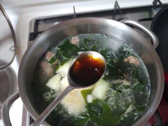

아이들을 위한 영양만점 소고기 미역국
조리 30분 | 4인분 | 초급 | 조회수 1500회
남녀노소 좋아하는 영양만점 소고기 미역국입니다~!
맛있는 쌀밥과 함께 오늘 저녁 가족을 위해 요리해보시는 건 어떠세요~?
맛있는 쌀밥과 함께 오늘 저녁 가족을 위해 요리해보시는 건 어떠세요~?
소고기 미역국 재료
[재료]
소고기 200g, 자른 미역 20g, 참기름 2큰술, 국간장 2.5큰술,
다진마늘 0.5큰술, 물 1.5L, 소금
소고기 200g, 자른 미역 20g, 참기름 2큰술, 국간장 2.5큰술,
다진마늘 0.5큰술, 물 1.5L, 소금
소고기 미역국 본격 레시피
1. 미역 20g을 물에 담가 부들부들해질 때까지 불려주세요.
2.불린 미역을 소기와 함께 넣고 참기름에 살살 볶아주세요.
2.불린 미역을 소기와 함께 넣고 참기름에 살살 볶아주세요.
3. 볶은 미역과 소고기에 물 1.5L를 넣어주세요.

4.다진마늘 0.5큰술을 넣어주세요.
5. 국간장 2.5큰술을 넣어주세요.
6.입맛에 따라서 소금으로 간을 맞춰주세요.
7. 충분한 시간동안 푹 끓여주세요.
요리 Tip!
소고기가 싫다면 조개를 넣고 끓여보세요!
맛있는 소고기 미역국
1. 미역 20g을 물에 담가 부들부들해질 때까지 불려주세요.
2.불린 미역을 소기와 함께 넣고 참기름에 살살 볶아주세요.
3. 볶은 미역과 소고기에 물 1.5L를 넣어주세요.
4.다진마늘 0.5큰술을 넣어주세요.
5. 국간장 2.5큰술을 넣어주세요.
6.입맛에 따라서 소금으로 간을 맞춰주세요.
7. 충분한 시간동안 푹 끓여주세요.